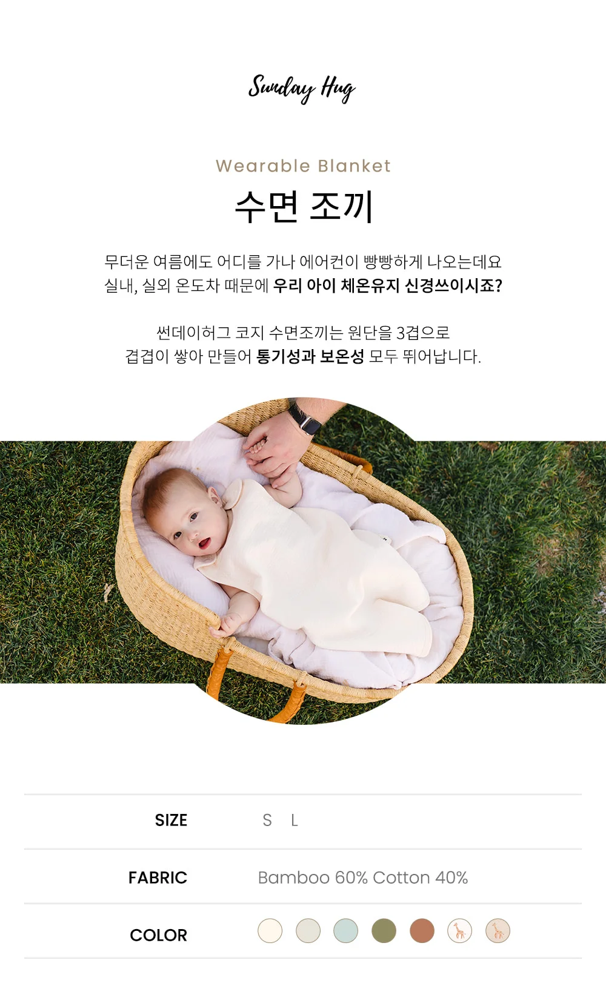
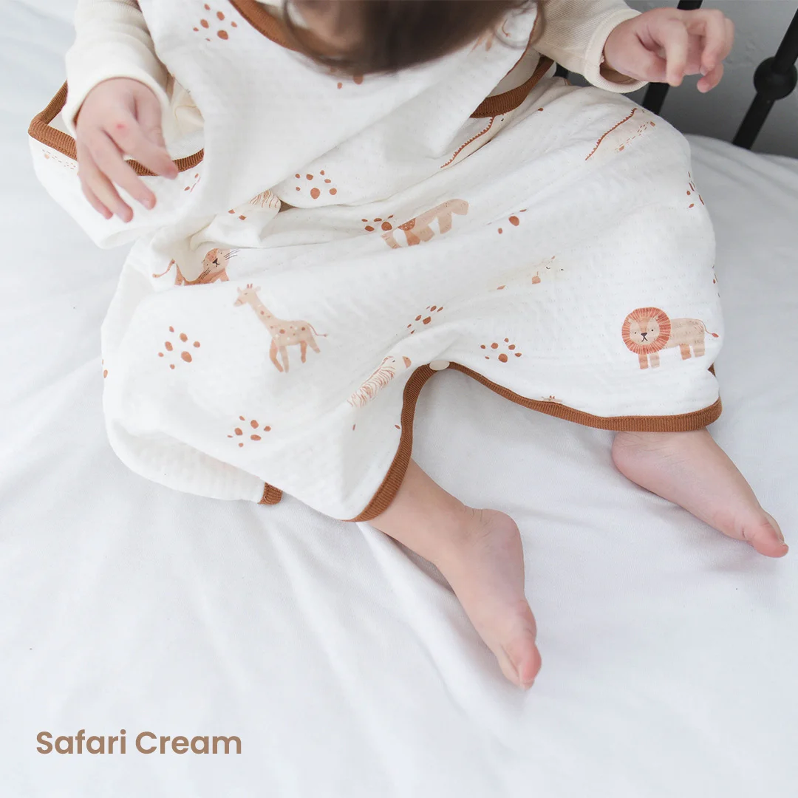
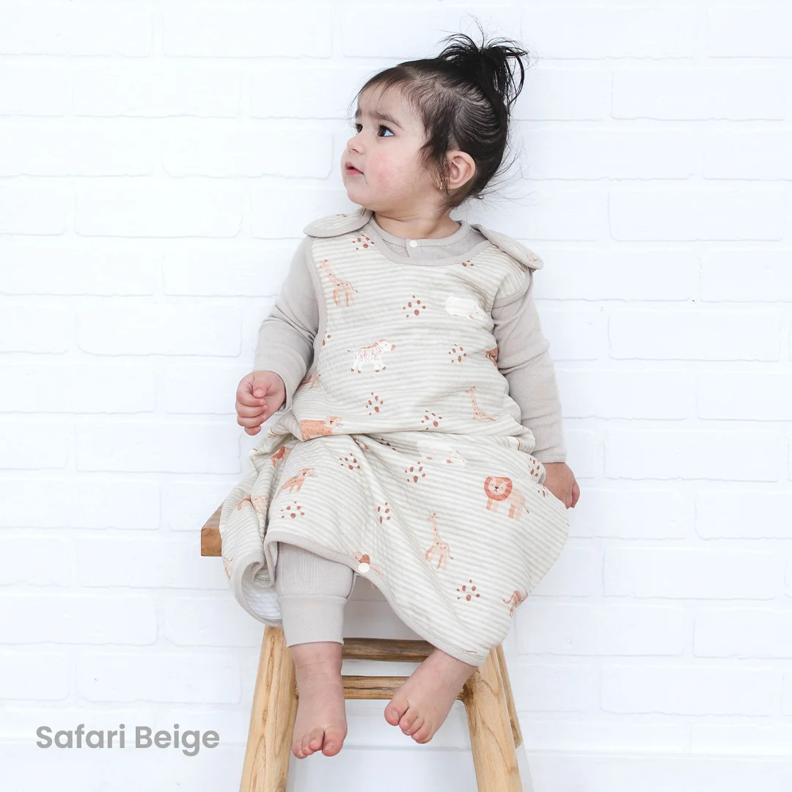
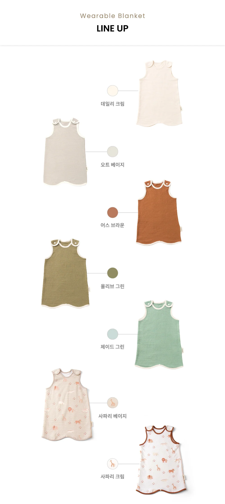
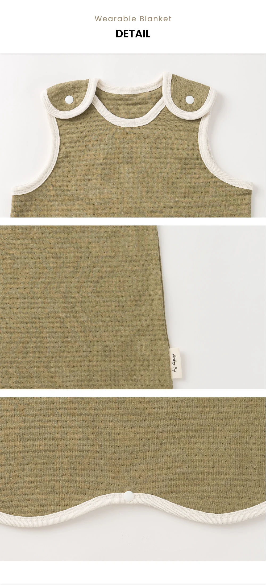
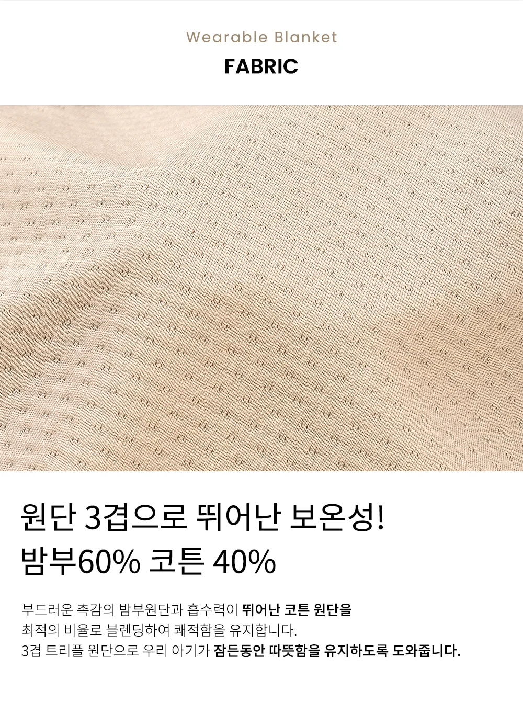
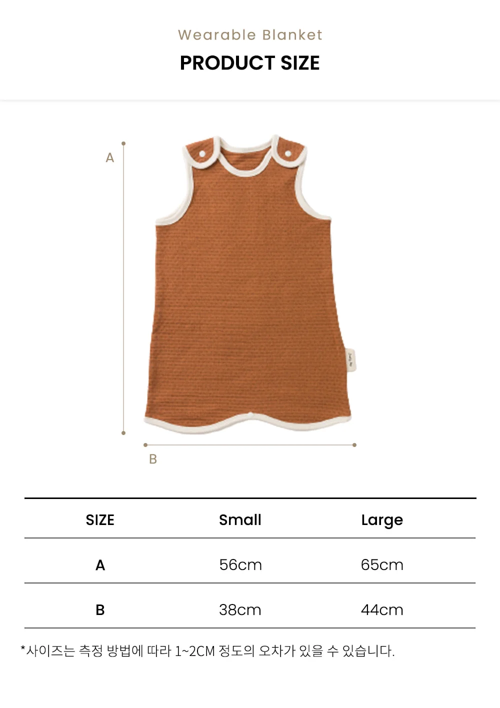

Designed For Families
썬데이허그와 함께
설렘 가득한 일상을 만들어보세요

3겹 밤부 원단, 뛰어난 보온성과 자유로운 움직임





"수면조끼를 입으면
SUNDAY HUG
어디서든 편안하게
잘 수 있어요!"

밤부 원단 특유의 실크같이 부드러운 촉감으로 아기 피부를 편안하게
튼튼한 코튼과 블렌딩하여 내구성과 쾌적함을 동시에
3겹으로 겹겹이 쌓아 보온성과 통기성 모두 확보

| SIZE | A (총길이) | B (밑단너비) |
|---|---|---|
| S | 56cm | 38cm |
| L | 65cm | 44cm |
| 제품명 | 썬데이허그 코지 수면조끼 밤부트리플 |
|---|---|
| 사이즈 | S (56 x 38cm) / L (65 x 44cm) |
| 색상 | 데일리 크림 / 오트 베이지 / 어스 브라운 / 올리브 그린 / 제이드 그린 / 사파리 베이지 / 사파리 크림 |
| 원단 | 밤부 60% / 코튼 40% (3겹 트리플) |
| 잠금 | 스냅 버튼 (양쪽 어깨) |
| 제조국 | 대한민국 (100% 국내생산) |